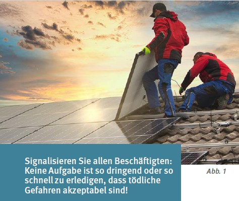
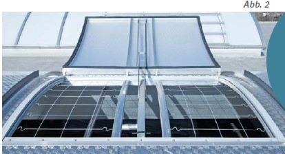
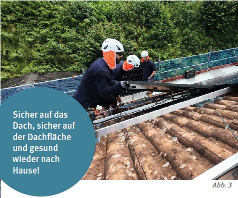
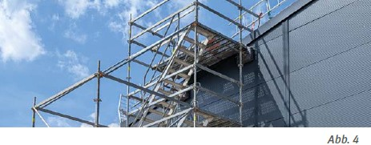
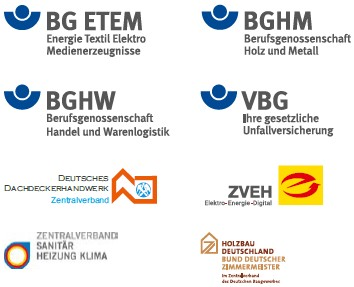

Gefahren bei der Montage von Photovoltaikanlagen
| Durch- und Abstürze stellen den Schwerpunkt des Unfallgeschehens dar
|
- Absturz beim Aufstieg mit Leitern
- Durchsturz durch nicht tragfähige Dächer, Lichtplatten und nicht gesicherte Oberlichter
- Absturz an Gebäudeaußenkanten
- Überlastung der Dachkonstruktion
- Elektrischer Strom
- Transport von schweren Lasten

Organisatorische Voraussetzungen
| Gefährdungsbeurteilungen und Montageanweisungen sind Grundvoraussetzungen
|
- Angebot berücksichtigt Bedingungen vor Ort: sicherer Zugang, Absturzsicherungen nach innen und außen?
- Gefährdungsbeurteilung für Projekt durchgeführt?
- Montageanweisung hat alle Schutzmaßnahmen festgelegt?
- Aufsichtsführende Person steht fest?
- Elektrofachkraft für elektrotechnische Arbeiten, z. B. Modulmontage, ist (vertraglich) eingebunden?
- Alle Beschäftigten (auch Zeitarbeitsbeschäftigte) sind unterwiesen – am besten vor Ort?
- Verkehrssicherungsmaßnahmen sind festgelegt (z. B. öffentlicher Bereich, Zugänge)?
- Dokumentation für Wartung und Reinigung erstellt (ggf. Unterlage für spätere Arbeiten)?
- Rettungskette für den Not- und Rettungsfall ist sichergestellt?

Geeignete Maßnahmen gegen Absturz
| Bauliche und technische Schutzmaßnahmen haben immer Vorrang – individuelle Maßnahmen sind nachrangig
|
Schutz gegen Durchsturz
Wo?
- Bei nicht begehbaren Dächern und Öffnungen wie Lichtbändern, Lichtkuppeln, Verglasungen, Lichtplatten
Wie?
- Mit bauseits vorhandenen durchsturzsicheren Einbauten, Seitenschutz, unverschieblichen tragfähigen Abdeckungen, Schutznetzen
- Laufstege mit Absturzsicherung
Schutz gegen Absturz:
Wo?
- Alle Dachkanten, auch Ortgang, Giebelseiten und bei Lichthöfen
Wie?
- Gerüste (bei geneigten Dächern ein Dachfanggerüst)
- Bauseits vorhandene Geländer oder für die Arbeiten errichtete Seitenschutzsysteme
Technische Maßnahmen funktionieren nicht?
Benutzung von PSA gegen Absturz – beachte:
- geeignete Anschlageinrichtungen, gesonderte Gefährdungsbeurteilung.
- Rettungskonzept, Unterweisung in Theorie und Praxis, geübte Rettungssituation.
| Leitern eignen sich nicht für die Montage von temporären Seitenschutzsystemen – Zugang und Materialtransport sind mit Treppenturm und Anstellaufzug sicherer!
|
Zugänge und Transportwege
Sichere Zugänge
- Bauseitig vorhandene Treppen
- Treppenaufstiege im Gerüst
- Treppentürme sowie Aufzüge
- Anlegeleitern sind nicht geeignet – nur innenliegende Leitern im Gerüst
- Ein Ausstieg bzw. das Übersteigen von einer Hubarbeitsbühne auf das Dach ist grundsätzlich nicht zulässig
- Auf nicht durchsturzsicheren Dacheindeckungen min. 50 cm breite, unverschiebbare Lauf- bzw. Arbeitsstege mit Absturzsicherungen
- Wellplatten, Lichtkuppeln, Lichtplatten oder Lichtbänder sind grundsätzlich als nicht durchsturzsicher anzusehen
- Bei Laufstegen ohne Absturzsicherung zusätzlich Schutznetze unterhalb der Arbeitsstege
Materialtransport
- Materialaufzüge oder Krane
- Nur gebremste Seilrollenaufzüge verwenden

Asbestzementdächer
Die Montage von Photovoltaikanlagen auf Asbestzementdächern ist verboten (Gefahrstoffverordnung). Eine Nichtbeachtung des Überdeckungsverbotes hat strafrechtliche Konsequenzen. Nähere Auskünfte erteilt die zuständige Behörde, z. B. die Gewerbeaufsicht.
BG BAU –
Berufsgenossenschaft der Bauwirtschaft
Bundesallee 210
10719 Berlin
Tel.: 030 85781-0
Fax: 030 85781-500
info@bgbau.de
www.bgbau.de
Unsere Partner:

Bildquellen:
Titel: Ingo Bartussek – stock.adobe.com
Abb. 1: mmphoto – stock.adobe.com
Abb. 2: Kingspan Light + Air GmbH
Abb. 3: BG ETEM
Abb. 4: Andreas Warnecke – BG ETEM
Stand Februar 2025 Abrufnummer 632